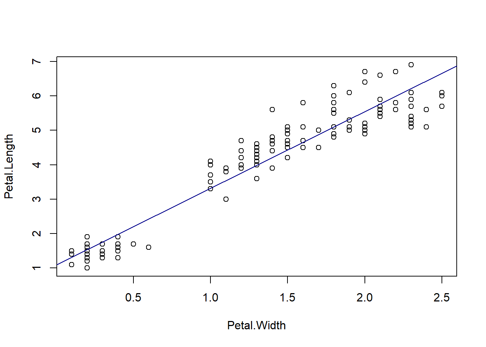
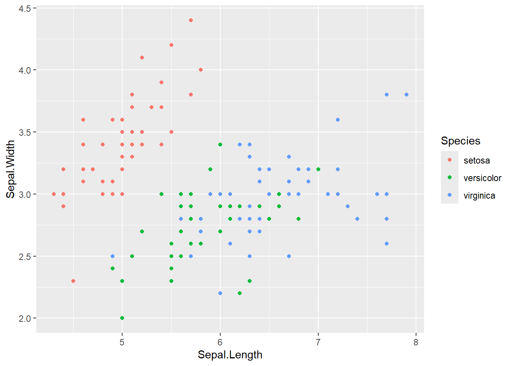
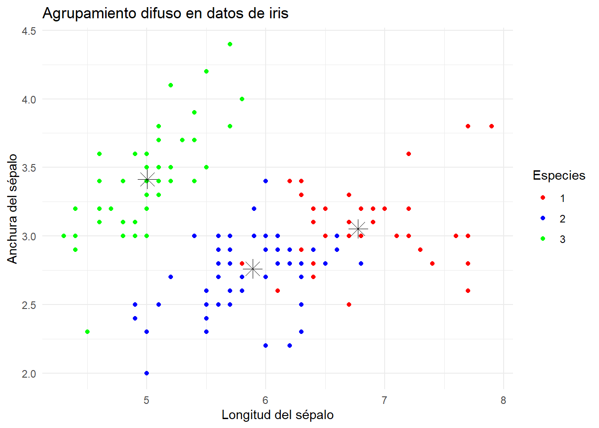
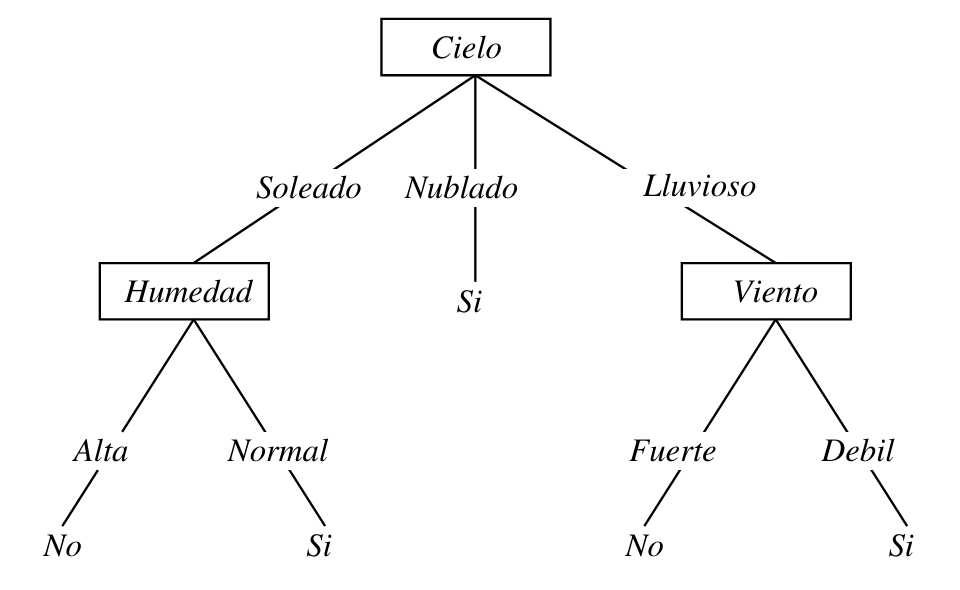
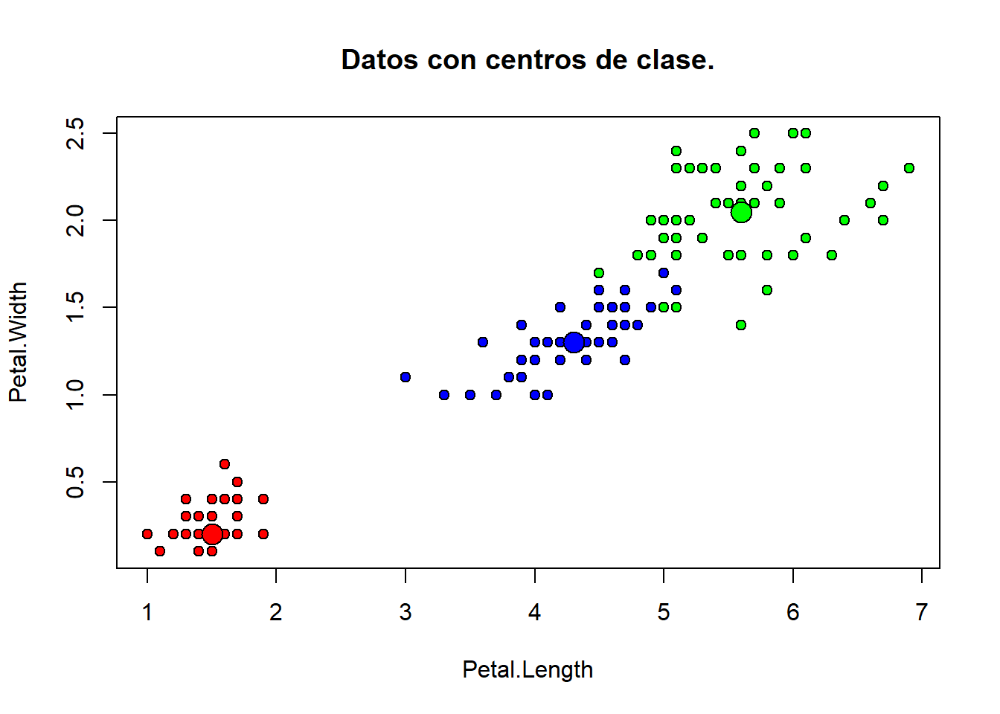
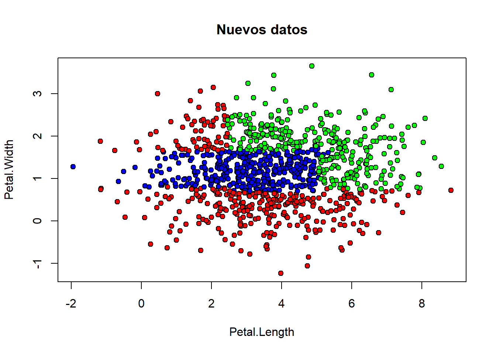

lm.fit=lm(Petal.Length~Petal.Width,data=iris)
lm.fit14 Herramientas y métodos para la predicción espacial
La predicción juega un papel fundamental dentro del DSM. De allí proviene la información que permitirá una toma de decisiones acertada. Para predecir dicha información, se utilizan diferentes modelos analíticos, estadísticos y de machine learning, estos métodos se verán a continuación.
14.1 Regresión lineal
El modelo de regresión lineal es el más utilizado para la predicción debido a que es relativamente simple y de fácil interpretación. Este modelo predice una variable cuantitativa a partir de los valores de otra variable, esta relación se convierte en un modelo de regresión simple. Por otra parte, el modelo de regresión lineal múltiple, permite considerar más de una variable explicativa en el modelo.
En el manejo de datos espaciales, este modelo permite modelar, examinar y explorar relaciones espaciales, lo que ayuda en la explicación de los diversos factores que influyen en la presencia de patrones espaciales que han sido observados.
Un ejemplo de la aplicación de este modelo en la agricultura, es la medición de los efectos de diferentes variables en la cosecha de un cultivo. Variables como la aplicación de fertilizantes y el agua permitirán plantear la siguiente relación:
Rendimiento = β₀ + β₁ (fertilizante) + β₂
Donde,
β₀ representa la cosecha esperada sin usar fertilizantes, ni agua.
β₁ es el cambio promedio en la cosecha cuando la cantidad de fertilizante se aumenta en una unidad, suponiendo que la cantidad de agua permanece constante.
β₂ Es el cambio promedio en la cosecha cuando la cantidad de agua se aumenta en una unidad, asumiendo que la cantidad de fertilizante es la misma.
Los valores de β₁ y β₂, se podrán combinar de diferentes formas para que finalmente se ajusten las cantidades de fertilizante y agua sean las óptimas para maximizar la cosecha.
NoteModelo de regresión
Se cargan los datos del dataset iris, este es un conjunto de datos cuantifica la variación morfológica de la flor Iris de tres especies relacionadas. Contiene 4 mediciones de cada muestra: largo y ancho del sépalo y el pétalo en centímetros.
NoteCargar datos
La función lm() genera un objeto que almacena toda la información del modelo, para ver su contenido se emplea la función names() y para visualizar los principales parámetros del modelo generado se utiliza summary().
NoteContenido
names(lm.fit) [1] "coefficients" "residuals" "effects" "rank"
[5] "fitted.values" "assign" "qr" "df.residual"
[9] "xlevels" "call" "terms" "model"
NoteParámetros
summary(lm.fit)
Call:
lm(formula = Petal.Length ~ Petal.Width, data = iris)
Residuals:
Min 1Q Median 3Q Max
-1.33542 -0.30347 -0.02955 0.25776 1.39453
Coefficients:
Estimate Std. Error t value Pr(>|t|)
(Intercept) 1.08356 0.07297 14.85 <2e-16 ***
Petal.Width 2.22994 0.05140 43.39 <2e-16 ***
---
Signif. codes: 0 '***' 0.001 '**' 0.01 '*' 0.05 '.' 0.1 ' ' 1
Residual standard error: 0.4782 on 148 degrees of freedom
Multiple R-squared: 0.9271, Adjusted R-squared: 0.9266
F-statistic: 1882 on 1 and 148 DF, p-value: < 2.2e-16La función abline() permite agregar una línea a un gráfico, recibe como parámetros la pendiente y el intercepto que se obtuvieron en el paso anterior. También puede recibir directamente un objeto lm.
NoteGráfico tendencia
plot(Petal.Length~Petal.Width,data=iris)
abline(1.083,2.229,col='darkblue')
Se utiliza la función predict.lm() para la predicción
NotePredicción de un valor
predict.lm(lm.fit,data.frame(Petal.Width=1)) 1
3.313499 Si se busca predecir más de un valor, se define un vector con los valores que se quieran predecir y a la función se proporciona el vector. En este caso el vector será “m”
NotePredicción de varios valores
m=c(2,4,7,8,15,29)
predict.lm(lm.fit,data.frame(Petal.Width=m)) 1 2 3 4 5 6
5.543439 10.003320 16.693141 18.923082 34.532665 65.751832 14.2 Regresión cubist
El método Cubist, también conocido como regresión Cubist, es un algoritmo de aprendizaje automático para la construcción de modelos de regresión no lineales. A diferencia de los modelos lineales tradicionales, Cubist es capaz de capturar relaciones complejas entre las variables predictoras y la variable objetivo, haciéndolo una herramienta útil para modelar fenómenos no lineales en diversos campos.
En resumen, la validación de un modelo Cubist es un proceso esencial para garantizar su confiabilidad y generalización. Al utilizar técnicas de validación cruzada, conjuntos de prueba independientes, selección de variables, interpretación del modelo y monitoreo del rendimiento, puede construir modelos Cubist robustos y efectivos para diversas aplicaciones de regresión no lineal.
14.3 Clusterización (k-means)
El algoritmo k-means es un método de agrupamiento que se utiliza para dividir un conjunto de datos en k grupos o clusters, donde cada punto de datos pertenece al grupo cuyo centroide es más cercano. Esta técnica usa la distancia entre los datos para saber que tan parecidos o diferentes son, este algoritmo se considera de aprendizaje no supervisado. Su funcionamiento se explica a continuación:
Inicialización: Elegir número de clústeres.
Asignación de puntos a clústeres: Cada punto de datos se asigna al clúster más cercano.
Recálculo de centroides: Se calcula el nuevo centro de cada clúster.
Reasignación de puntos: Se vuelven a asignar los puntos en función a la distancia.
Bucle: Se repiten los pasos 3 y 4 hasta que no hayan cambios significativos.
Resultado: Cuando el algoritimo converge cada clúster representará un grupo distinto de datos.
Notek-means
Del conjunto de datos cargado, se realiza una gráfica que muestre la dispersión de los datos
NoteDispersión
library(ggplot2)Warning: package 'ggplot2' was built under R version 4.4.3ggplot(data = iris, aes(x = Sepal.Length, y = Sepal.Width, col = Species)) +
geom_point()
En este caso, se dividirán los datos con un 70% para el entrenamiento y 30% de prueba
NoteDivisión datos: 70/30
set.seed(12345)
size = floor(0.70 * nrow(iris))
idx = sample(seq_len(nrow(iris)), size = size)
iris_train = iris[idx, ]
iris_test = iris[-idx, ]La función knn reconoce patrones en los datos sin un aprendizaje específico, simplemente midiendo la distancia entre grupos de datos.
NoteKNN
library(class)Warning: package 'class' was built under R version 4.4.3k = sqrt(nrow(iris_train))
iris_prediction = knn(
train = iris_train[1:4],
test = iris_test[1:4],
cl = iris_train[,ncol(iris_train)],
k = k
)14.4 Máquinas de vectores de soporte (SVM)
Una máquina de vectores de soporte (SVM, por sus siglas en inglés) es un algoritmo de aprendizaje supervisado, que se utiliza en problemas de clasificación y regresión.
El objetivo del algoritmo SVM es encontrar un hiperplano que separe los puntos de datos de una clase y de los de otra clase. En otras palabras, un hiperplano con el mayor margen entre las dos clases. Este algoritmo es viable sólo para problemas que sean linealmente separables, donde puede encontrar dicho hiperplano.
Para la solución de los problemas prácticos, el algoritmo maximiza el margen suave permitiendo una pequeña cantidad de clasificaciones erróneas.
El algoritmo cuenta con una función conocida cómo kernel, dicha función asigna los datos a un espacio diferente en diferentes dimensiones, para facilitar la separación de las clases.
14.5 Fuzzy clustering - agrupamiento difuso
La agrupación difusa, también conocida como agrupación suave o k-medias suaves, es una técnica de agrupación de datos que se diferencia de los métodos de agrupación tradicionales en un aspecto clave: el grado de membresía. El agrupamiento difuso tiene la cualidad de ser un agrupamiento basado en particiones, donde los datos pueden estar en más de un cluster.
El resultado obtenido son los centros de los clústers (similar a k-means) pero con difusión (fuzziness) de forma que las observaciones o individuos pueden pertenecer a más de 1 cluster.
NoteCódigo
NoteCargar librerías
# Cargar librerías
library(e1071)
library(ggplot2)
NoteCargar y seleccionar los datos
# Cargar datos de iris
data(iris)
# Seleccionar las columnas con las características
datos = iris[, 1:4]
NoteModelo de agrupamiento difuso
# Realizar agrupamiento difuso
resultados = cmeans(datos, centers=3)
# Obtener los centros de los grupos
centros = resultados$centers
# Asignar nombres a las columnas
colnames(centros) = colnames(datos)
# Asignar cada observación a un grupo
grupos = resultados$cluster
# Añadir la asignación de grupos al conjunto de datos
iris$Grupo = factor(grupos)
NoteVisualización
# Graficar los datos y los centros de los grupos
ggplot(iris, aes(x = Sepal.Length, y = Sepal.Width, color = Grupo)) +
geom_point() +
geom_point(data = as.data.frame(centros), aes(x = Sepal.Length, y = Sepal.Width), size = 5, shape = 8, color = "black") +
theme_minimal() +
labs(title = "Agrupamiento difuso en datos de iris", x = "Longitud del sépalo", y = "Anchura del sépalo") +
scale_color_manual(values = c("red", "blue", "green")) +
guides(color = guide_legend(title = "Especies"))
14.6 Expert knowledge-based methods - Sistema basado en el conocimiento (KBS)
Los métodos expertos basados en el conocimiento, también conocidos como sistemas basados en el conocimiento (KBS) o sistemas expertos (ES), son un tipo de técnica de inteligencia artificial (IA) que se basa en capturar y utilizar el conocimiento de expertos humanos en un dominio específico para resolver problemas.

14.7 Árboles de decisión
Los árboles de decisión son uno de los algoritmos más utilizados en la toma de decisiones. Aunque su capacidad es menor a otros algoritmos, son de uso frecuente por su sencilla implementación y fácil interpretación. Un árbol de decisión es un modelo predictivo que divide el espacio de los predictores agrupando observaciones con valores similares para la variable respuesta o dependiente.
Un árbol de decisión puede tener diferentes tipos de nodos:
Primer nodo o nodo raíz: en él se produce la primera división en función de la variable más importante.
Nodos internos o intermedios: dividen el conjunto de datos en función a las demás variables que complementan el nodo raíz.
Nodos terminales u hojas: se ubican en la parte inferior del esquema y su función es indicar el resultado.

14.8 Modelo de Random Forest
Los bosques aleatorios (Random Forest) son un método de aprendizaje automático muy popular, utilizado tanto para tareas de clasificación como de regresión. Se caracterizan por su robustez, precisión y versatilidad, lo que los convierte en una herramienta valiosa para diversos análisis de datos.
En R, el paquete randomForest proporciona las herramientas necesarias para implementar y utilizar bosques aleatorios. Su funcionamiento se resume en dos partes:
Creación de múltiples árboles de decisión
- El algoritmo genera un conjunto de árboles de decisión de forma iterativa.
- Cada árbol se construye utilizando una submuestra aleatoria de los datos (bagging) y un subconjunto aleatorio de características (característica aleatoria).
- La característica aleatoria seleccionada en cada división se elige al azar entre un conjunto predefinido de variables.
- Esto permite que cada árbol aprenda diferentes patrones en los datos y reduce la correlación entre ellos.
Predicciones
- Para realizar predicciones, cada árbol del bosque emite una predicción individual.
- En el caso de la clasificación, la clase más votada por los árboles individuales se convierte en la predicción final para la nueva instancia.
- Para la regresión, se calcula el promedio de las predicciones individuales de los árboles.
En el modelo de bosques aleatorios, las variables de división empleadas por cada nodo se seleccionan en función de su capacidad para maximizar la diferencia en los valores medios de las variables de respuesta en los nodos de división resultantes, por lo que el valor predicho del bosque es el valor predicho medio de los árboles individuales.
NoteModelo RF
Se deben cargar las librerías y el dataset, esta vez se muestra otra manera de invocar el dataset iris
NoteCargar librerias y datos
library(tidyverse)
library(class)
library(gmodels)
library(caret)
library(e1071)
library(caTools)
library(ggplot2)
library(lattice)
library(nnet)
library(foreach)
library(glmnet)
library(randomForest)
data(iris)
str(iris)Se realiza una descripción rápida del dataset
NoteDescripción del dataset
summary(iris) Sepal.Length Sepal.Width Petal.Length Petal.Width
Min. :4.300 Min. :2.000 Min. :1.000 Min. :0.100
1st Qu.:5.100 1st Qu.:2.800 1st Qu.:1.600 1st Qu.:0.300
Median :5.800 Median :3.000 Median :4.350 Median :1.300
Mean :5.843 Mean :3.057 Mean :3.758 Mean :1.199
3rd Qu.:6.400 3rd Qu.:3.300 3rd Qu.:5.100 3rd Qu.:1.800
Max. :7.900 Max. :4.400 Max. :6.900 Max. :2.500
Species
setosa :50
versicolor:50
virginica :50
En los modelos de aprendizaje supervisado, es importante dividir los datos en un conjunto de entrenamiento (train) y un conjunto de prueba (test) para evaluar el rendimiento del modelo de forma adecuada. En este caso, se dividirá un 80% para entrenar el modelo y un 20% para validarlo.
NoteDividir dataset
set.seed(12345)
size = floor(0.80 * nrow(iris))
idx = sample(seq_len(nrow(iris)), size = size)
iris_train = iris[idx, ]
iris_test = iris[-idx, ]Se entrena el modelo de random forest y por defecto se crean 500 árboles
NoteEntrenamiento
forestIris = randomForest(Species ~ Petal.Width + Petal.Length, data = iris, prox = TRUE)
forestIris
Call:
randomForest(formula = Species ~ Petal.Width + Petal.Length, data = iris, prox = TRUE)
Type of random forest: classification
Number of trees: 500
No. of variables tried at each split: 1
OOB estimate of error rate: 4%
Confusion matrix:
setosa versicolor virginica class.error
setosa 50 0 0 0.00
versicolor 0 47 3 0.06
virginica 0 3 47 0.06Con la función getTree se busca seleccionar uno de los árboles creados, en este caso el 3
NoteExtraer uno de los árboles generados
getTree(forestIris, k = 3) left daughter right daughter split var split point status prediction
1 2 3 2 2.70 1 0
2 0 0 0 0.00 -1 1
3 4 5 1 1.65 1 0
4 6 7 2 4.95 1 0
5 8 9 1 1.75 1 0
6 0 0 0 0.00 -1 2
7 10 11 2 5.45 1 0
8 0 0 0 0.00 -1 3
9 0 0 0 0.00 -1 3
10 12 13 1 1.55 1 0
11 0 0 0 0.00 -1 3
12 0 0 0 0.00 -1 3
13 0 0 0 0.00 -1 2Mediante una matriz de confusión se ven los resultados preliminares
NoteMatriz de confusión
table(predict(forestIris), iris$Species)
setosa versicolor virginica
setosa 50 0 0
versicolor 0 47 3
virginica 0 3 47prop.table(table(predict(forestIris), iris$Species))
setosa versicolor virginica
setosa 0.3333333 0.0000000 0.0000000
versicolor 0.0000000 0.3133333 0.0200000
virginica 0.0000000 0.0200000 0.3133333La gráfica permite visualizar los centros de cada clase
NoteIdentificación de centros de clase
iris.p <- classCenter(iris[, c(3, 4)], iris$Species, forestIris$prox)
plot(iris[, 3], iris[, 4], pch = 21, xlab = names(iris)[3], ylab = names(iris)[4],
bg = c("red", "blue", "green")[as.numeric(factor(iris$Species))], main = "Datos con centros de clase.")
points(iris.p[, 1], iris.p[, 2], pch = 21, cex = 2, bg = c("red", "blue", "green"))
Se combinan direfentes modelos para perfeccionar el entrenamiento del mismo
NoteCombinando varios modelos
forestIris1 <- randomForest(Species ~ Petal.Width + Petal.Length, data = iris,
prox = TRUE, ntree = 50)
forestIris2 <- randomForest(Species ~ Petal.Width + Petal.Length, data = iris,
prox = TRUE, ntree = 50)
forestIris3 <- randomForest(Species ~ Petal.Width + Petal.Length, data = iris,
prox = TRUE, ntree = 50)
forestIris1
Call:
randomForest(formula = Species ~ Petal.Width + Petal.Length, data = iris, prox = TRUE, ntree = 50)
Type of random forest: classification
Number of trees: 50
No. of variables tried at each split: 1
OOB estimate of error rate: 4.67%
Confusion matrix:
setosa versicolor virginica class.error
setosa 50 0 0 0.00
versicolor 0 47 3 0.06
virginica 0 4 46 0.08forestIris2
Call:
randomForest(formula = Species ~ Petal.Width + Petal.Length, data = iris, prox = TRUE, ntree = 50)
Type of random forest: classification
Number of trees: 50
No. of variables tried at each split: 1
OOB estimate of error rate: 5.33%
Confusion matrix:
setosa versicolor virginica class.error
setosa 50 0 0 0.00
versicolor 0 47 3 0.06
virginica 0 5 45 0.10forestIris3
Call:
randomForest(formula = Species ~ Petal.Width + Petal.Length, data = iris, prox = TRUE, ntree = 50)
Type of random forest: classification
Number of trees: 50
No. of variables tried at each split: 1
OOB estimate of error rate: 4.67%
Confusion matrix:
setosa versicolor virginica class.error
setosa 50 0 0 0.00
versicolor 0 47 3 0.06
virginica 0 4 46 0.08El modelo final combina los modelos que se crearon anteriormente
NoteNuevo modelo
model <- combine(forestIris1, forestIris2, forestIris3)
model
Call:
randomForest(formula = Species ~ Petal.Width + Petal.Length, data = iris, prox = TRUE, ntree = 50)
Type of random forest: classification
Number of trees: 150
No. of variables tried at each split: 115 Matriz de confusión- nuevo modelo
table(predict(model, iris), iris$Species)
setosa versicolor virginica
setosa 50 0 0
versicolor 0 49 0
virginica 0 1 50Se obtienen las clases del nuevo conjunto de datos
NoteClases para nuevos objetos
newdata <- data.frame(Sepal.Length <- rnorm(1000, mean(iris$Sepal.Length), sd(iris$Sepal.Length)),
Sepal.Width <- rnorm(1000, mean(iris$Sepal.Width), sd(iris$Sepal.Width)),
Petal.Width <- rnorm(1000, mean(iris$Petal.Width), sd(iris$Petal.Width)),
Petal.Length <- rnorm(1000, mean(iris$Petal.Length), sd(iris$Petal.Length)))
pred <- predict(model, newdata)De esta forma se visualizan los resultados del modelo, mostrando que Random Forest es capaz de separar conjuntos de datos que no son separables linealmente
NoteVisualización
plot(newdata[, 4], newdata[, 3], pch = 21, xlab = "Petal.Length", ylab = "Petal.Width",
bg = c("red", "blue", "green")[as.numeric(pred)], main = "Nuevos datos")
15.1 Redes neuronales artificiales (ANN)
Las redes neuronales artificiales están compuestas por elementos simples que se conocen como neuronas, cada una de estas puede tomar decisiones matemáticas simples. Cuando se unen forman redes interconectadas que permiten analizar problemas complejos y brindar respuestas precisas.
Arquitectura de una red neuronal simple
Capa de entrada
Se ingresan los datos en la red neuronal artificial desde la capa de entrada. Los nodos de entrada procesan los datos, los analizan o los clasifican y los pasan a la siguiente capa.
Capa oculta
Las capas ocultas toman su entrada de la capa de entrada o de otras capas ocultas, se pueden tener una gran cantidad de capas ocultas. Cada capa oculta analiza la salida de la capa anterior, la procesa aún más y la pasa a la siguiente capa.
Capa de salida
La capa de salida proporciona el resultado final de todo el procesamiento de datos que realiza la red, puede tener uno o varios nodos.
En la siguiete tabla hay una comparación de los modelos vistos anteriormente, la elección del método más adecuado dependerá del tipo de los datos a procesar, el tipo de solución (regresión o clasificación), la capacidad de computo, entre otros.
| Algoritmo | Precisión | Tiempo de entrenamiento | Linealidad | Hiperparámetros |
|---|---|---|---|---|
| Regresión lineal | Buena | Rápido | Si | ~4 |
| Boques de decisión | Alta | Moderado | No | ~5 |
| Redes neuronales | Buena | Moderado | No | ~8 |
15.2 Modelo ensamblado- Ensamble model
Un modelo ensamblado es una técnica en la que se combinan múltiples modelos de aprendizaje automático para mejorar la precisión y la robustez de las predicciones. En lugar de confiar en un solo modelo, los resultados de varios modelos se combinan de diferentes maneras, como promediando las predicciones, ponderando cada modelo de manera diferente, sumándolos o utilizando la observación más común entre los modelos. Esta combinación crea un efecto de votación múltiple que puede llevar a predicciones más precisas y fiables, especialmente cuando los modelos individuales tienen desacuerdos.
Los modelos ensamblados tienden a ser particularmente efectivos cuando los modelos individuales son diversos y no están perfectamente correlacionados entre sí. Esta diversidad permite que los errores de un modelo sean compensados por los aciertos de otros, mejorando el rendimiento general del sistema. Además, los modelos ensamblados a menudo superan el rendimiento de cualquier modelo individual, proporcionando una solución más robusta y generalizable.
NoteEjemplo de ensemble model
#Ejemplo con dataset de diabetes en mujeres de al menos 21 años
# Cargar librerias
library("SuperLearner")Loading required package: gamLoading required package: splinesLoaded gam 1.22-7Loading required package: nnlsSuper LearnerVersion: 2.0-42Package created on 2026-09-14library(MASS)
Attaching package: 'MASS'The following object is masked from 'package:dplyr':
select# Train y test: definir sets
train <- Pima.tr
test <- Pima.te
# Visualizar train
head(train) npreg glu bp skin bmi ped age type
1 5 86 68 28 30.2 0.364 24 No
2 7 195 70 33 25.1 0.163 55 Yes
3 5 77 82 41 35.8 0.156 35 No
4 0 165 76 43 47.9 0.259 26 No
5 0 107 60 25 26.4 0.133 23 No
6 5 97 76 27 35.6 0.378 52 Yes# Se dividen variables x y y
y <- as.numeric(train[,8])-1
ytest <- as.numeric(test[,8])-1
x <- data.frame(train[,1:7])
xtest <- data.frame(test[,1:7])
#Con listwrappers se visualizan el listado de modelos posibles que se incluyen en la librería SuperLearner
listWrappers()All prediction algorithm wrappers in SuperLearner: [1] "SL.bartMachine" "SL.bayesglm" "SL.biglasso"
[4] "SL.caret" "SL.caret.rpart" "SL.cforest"
[7] "SL.earth" "SL.gam" "SL.gbm"
[10] "SL.glm" "SL.glm.interaction" "SL.glmnet"
[13] "SL.ipredbagg" "SL.kernelKnn" "SL.knn"
[16] "SL.ksvm" "SL.lda" "SL.leekasso"
[19] "SL.lm" "SL.loess" "SL.logreg"
[22] "SL.mean" "SL.nnet" "SL.nnls"
[25] "SL.polymars" "SL.qda" "SL.randomForest"
[28] "SL.ranger" "SL.ridge" "SL.rpart"
[31] "SL.rpartPrune" "SL.speedglm" "SL.speedlm"
[34] "SL.step" "SL.step.forward" "SL.step.interaction"
[37] "SL.stepAIC" "SL.svm" "SL.template"
[40] "SL.xgboost"
All screening algorithm wrappers in SuperLearner:[1] "All"
[1] "screen.corP" "screen.corRank" "screen.glmnet"
[4] "screen.randomForest" "screen.SIS" "screen.template"
[7] "screen.ttest" "write.screen.template"#Se realiza el modelo con un sólo tipo de modelo
set.seed(2024)
single.model <- SuperLearner(y,
x,
family=binomial(),
SL.library=list("SL.ranger"))Loading required namespace: ranger single.model
Call:
SuperLearner(Y = y, X = x, family = binomial(), SL.library = list("SL.ranger"))
Risk Coef
SL.ranger_All 0.1732292 1#Se entrena el modelo ensamblado
set.seed(2024)
model <- SuperLearner(y,
x,
family=binomial(),
SL.library=list("SL.ranger",
"SL.ksvm",
"SL.ipredbagg",
"SL.bayesglm"))Loading required namespace: armLoading required namespace: kernlab# Modelo final
model
Call:
SuperLearner(Y = y, X = x, family = binomial(), SL.library = list("SL.ranger",
"SL.ksvm", "SL.ipredbagg", "SL.bayesglm"))
Risk Coef
SL.ranger_All 0.1742121 0.0000000
SL.ksvm_All 0.1716866 0.0000000
SL.ipredbagg_All 0.1668033 0.1782309
SL.bayesglm_All 0.1576570 0.8217691